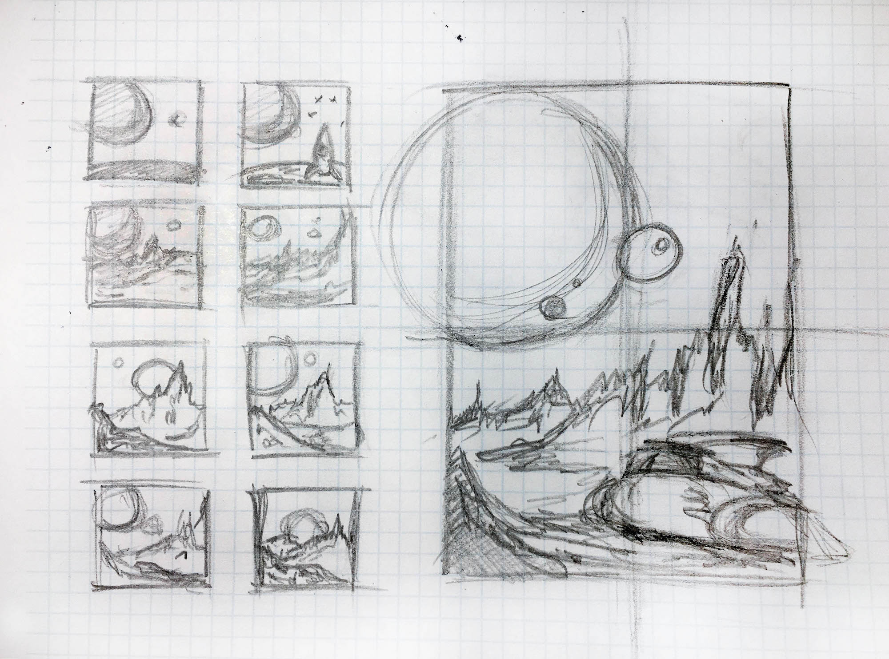
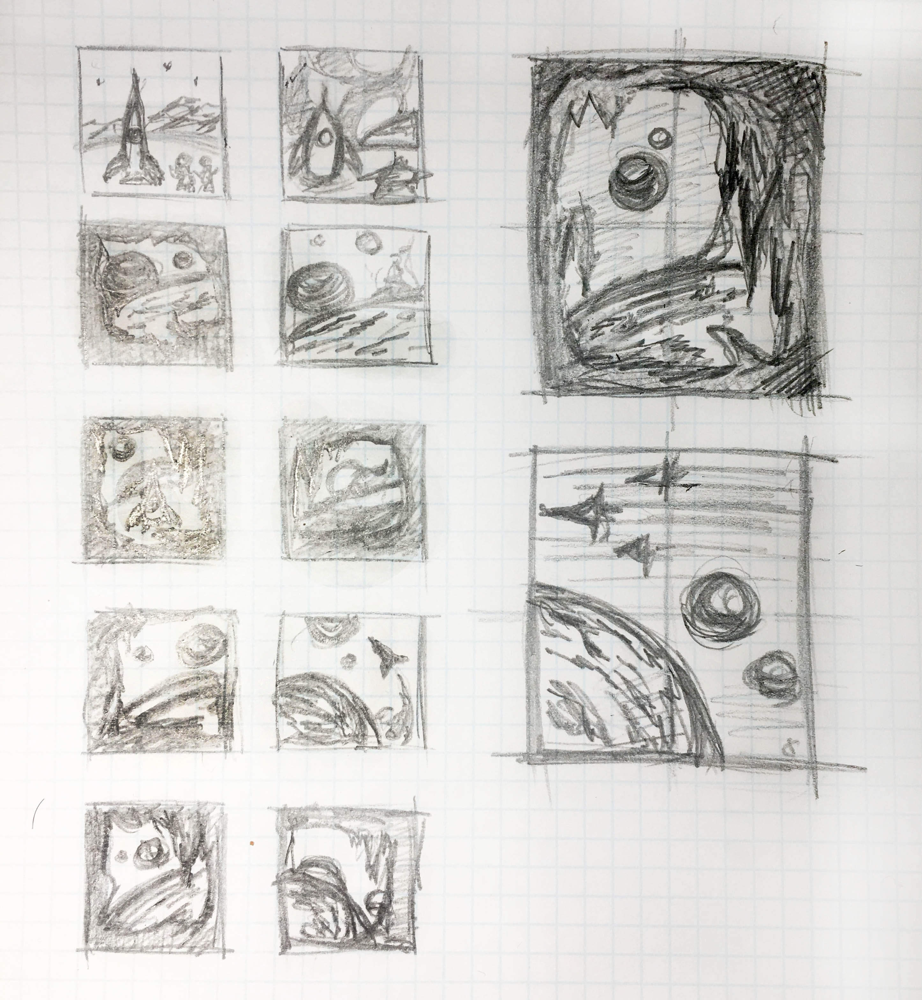
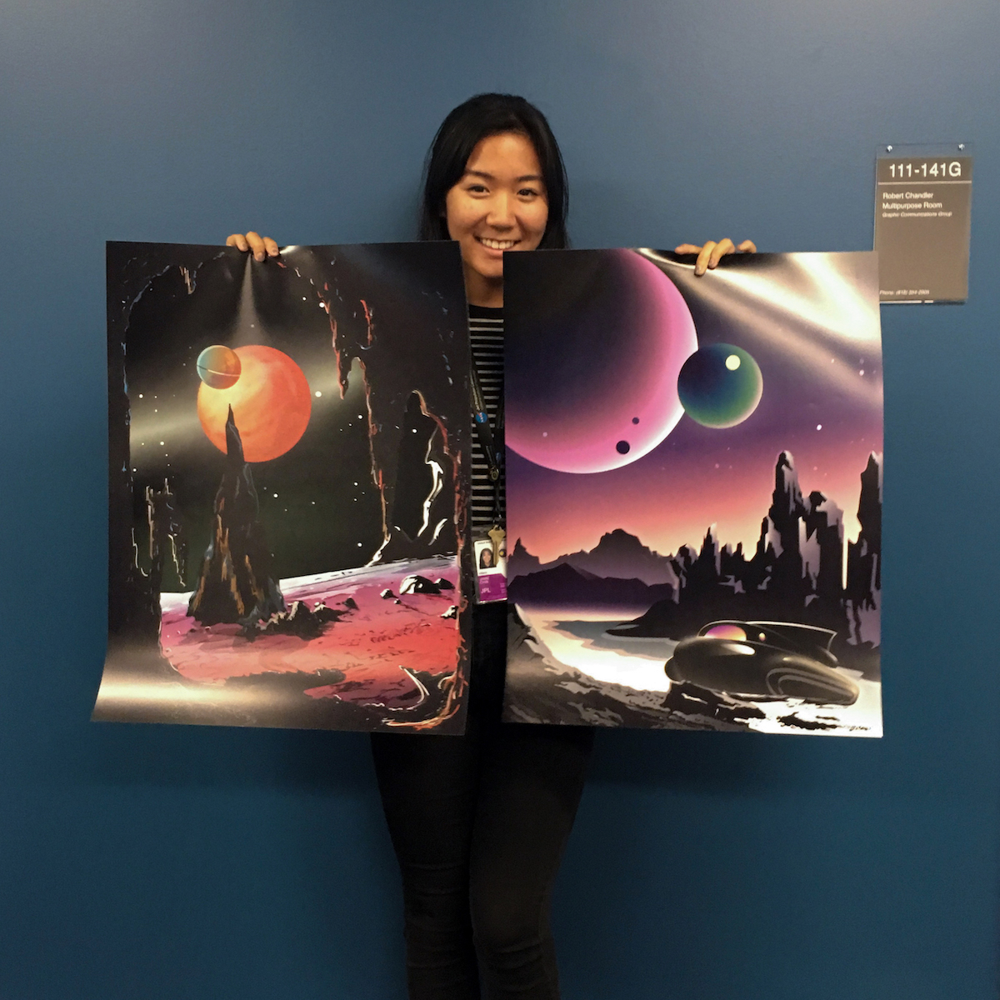
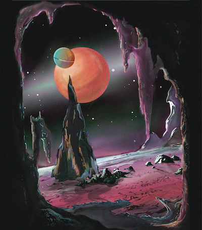

Intergalactic Poster Set
—
ROLE
Concept Design + Execution, Digital Illustration
TOOLS
Pen and Paper, Wacom Intuos, Adobe Illustrator, Adobe Photoshop
TIMELINE
30 hours per piece spread through 2 months

PROJECT
Exploring natural human curiosity of exo-planet exploration with a set of retro-future space prints.
This set includes my favorite visualizations of exoplanets imagined and essentially my marriage between sci-fi, tech, and art. What started off as a personal side project I had no intention of bringing to light eventually evolved into a work that represents my design style and interests.
PROCESS
Thumbnails


Prints

